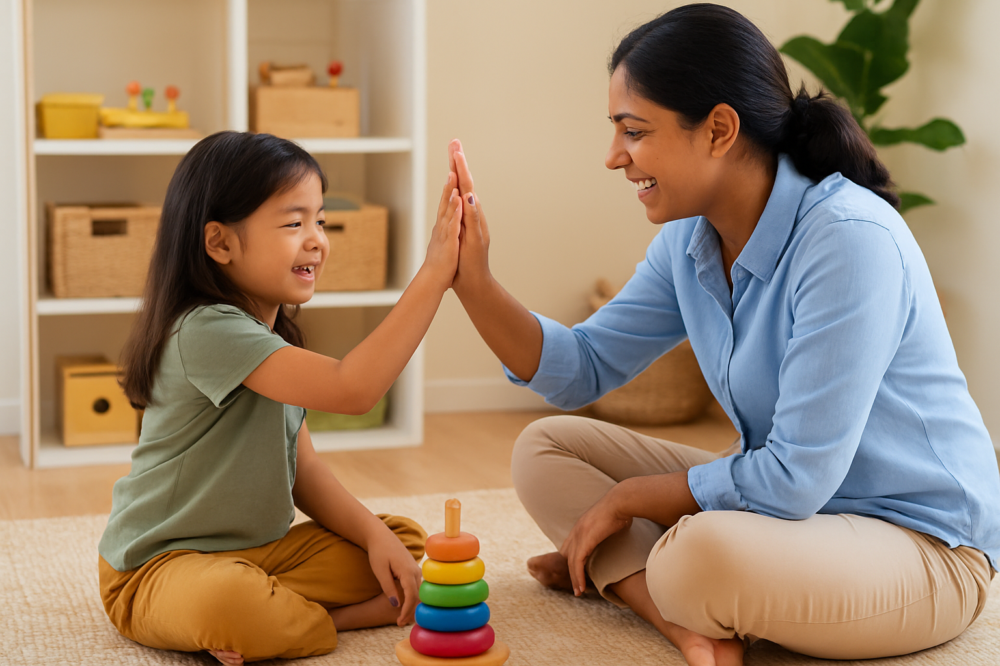
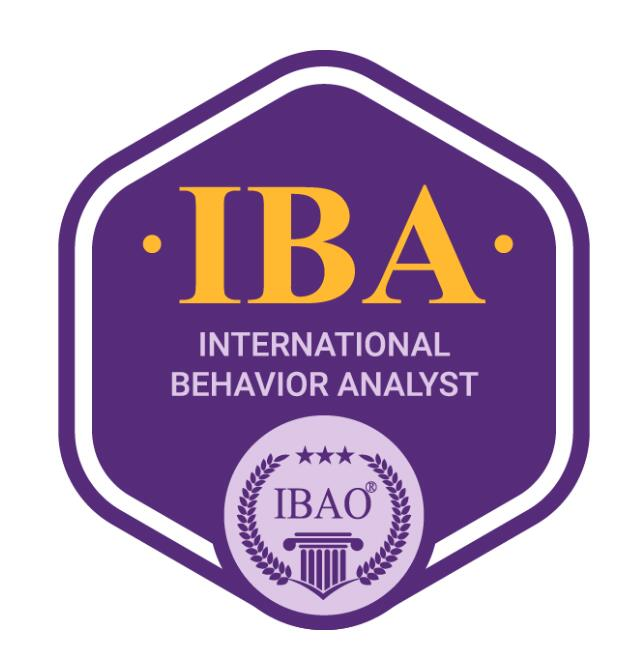
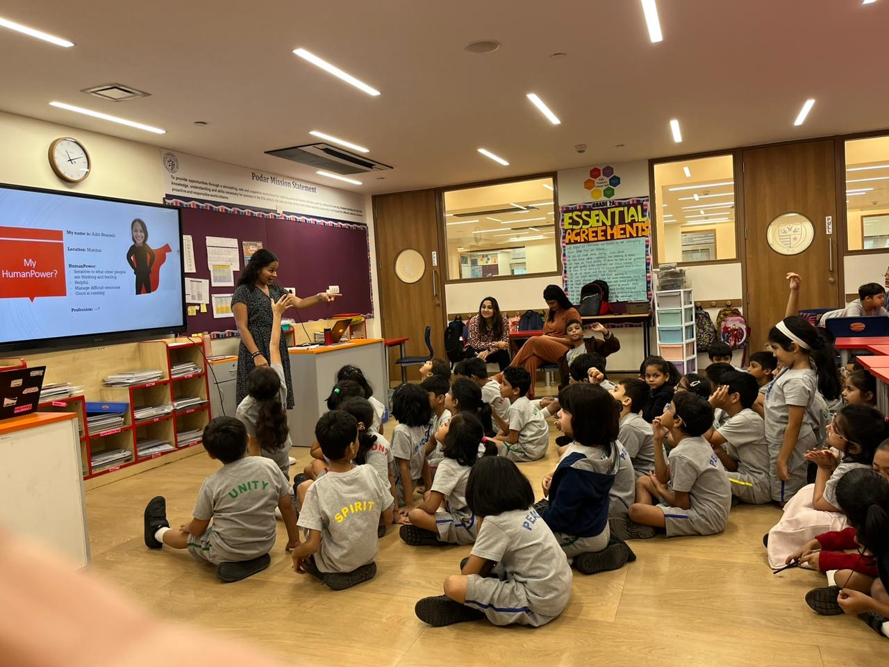
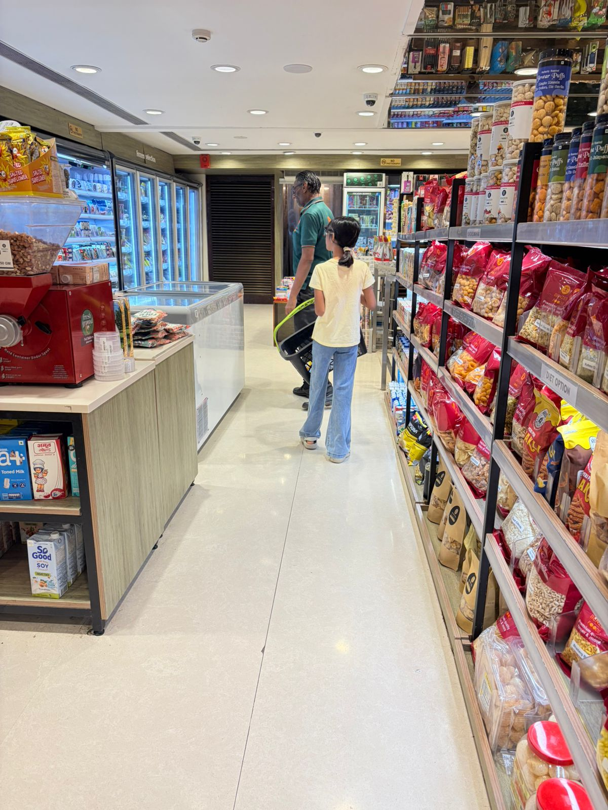
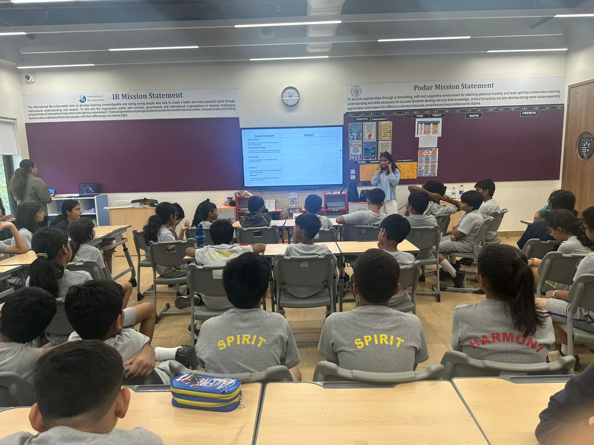
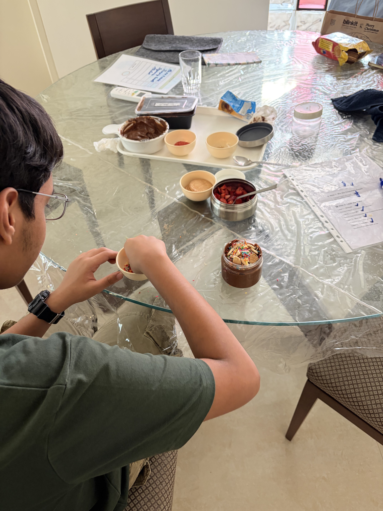
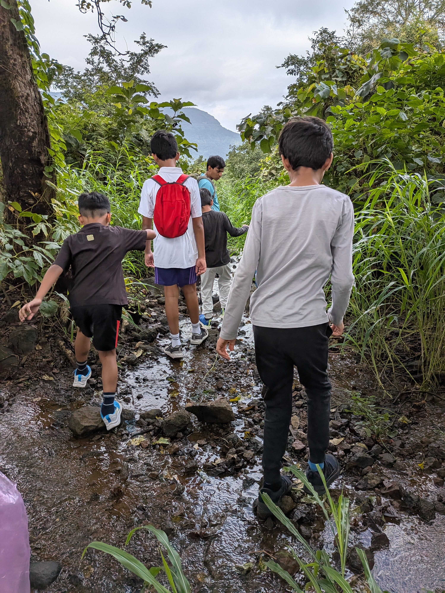
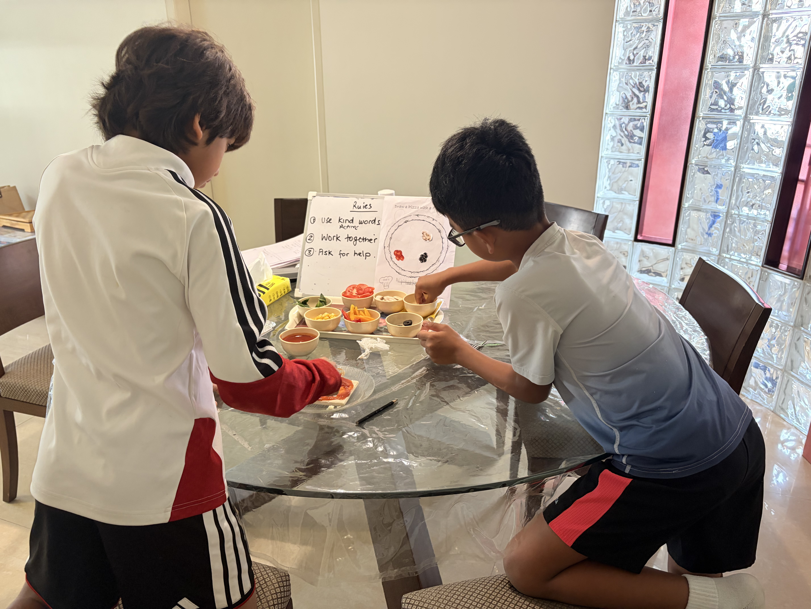
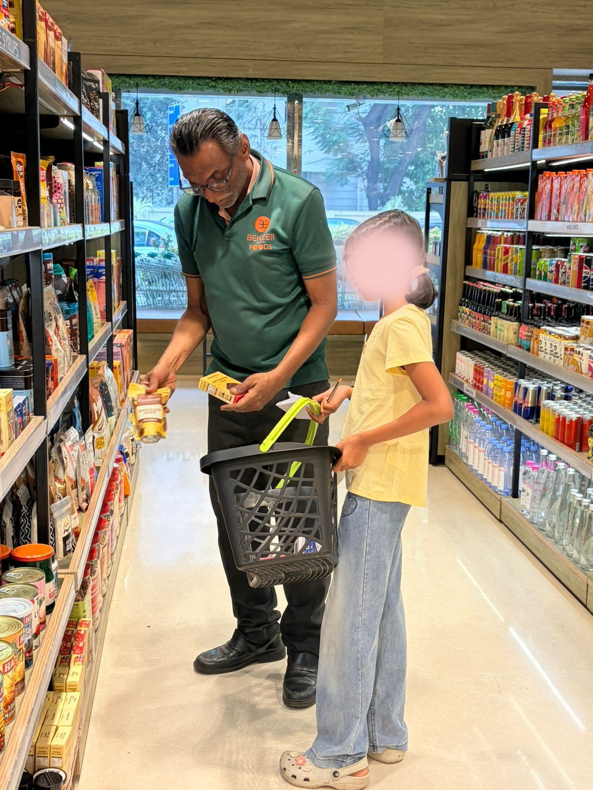
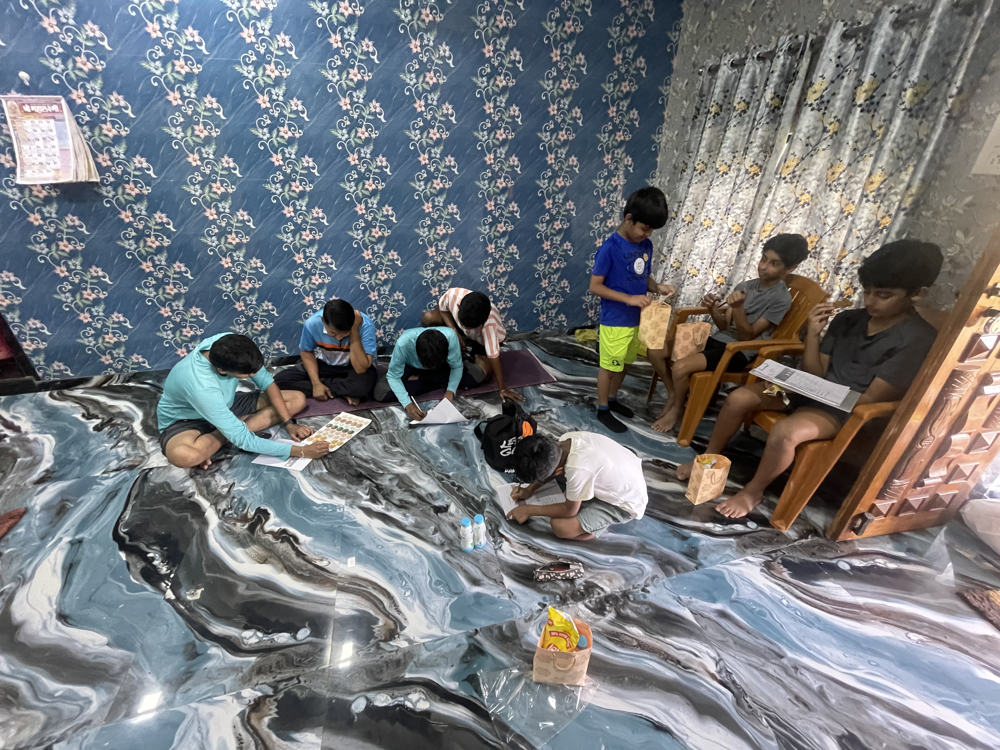

At Little Wins, we provide child-centered, evidence-based therapy for children aged 2–21 years — blending behavioural science with creativity, play, and compassion.

Inspired by the turtle — calm, steady, and consistent in its journey — we believe lasting growth is built one small step at a time.
After completing my Master's in Clinical Psychology from University College London (UCL) and earning my certification as an International Behaviour Analyst, I've worked across the UK, UAE and India helping children and families build meaningful life skills through evidence-based and compassionate care.
I use a thoughtful blend of ABA, CBT, and ACT to support children with developmental needs, autism, ADHD, emotional wellbeing, and social skills.

My little learning at work has been realizing that growth often reveals itself in small, everyday moments — a child finding the courage to try again, or a shy child starting a conversation with a peer for the first time.
This belief shapes our vision at Little Wins. We combine behavioural science with creativity, play, and collaboration to create personalized goals for every child and track progress systematically.
We support children and young people aged 2–21 years with a wide range of evidence-based services, delivered in-person in Mumbai and online globally.
Personalised one-on-one sessions and group settings to develop skills, confidence, and meaningful connections with peers.
Going beyond the clinic to practice skills in real environments — building independence in the places that matter most.
Empowering families with tools, strategies, and support to extend learning at home, in school, and everyday life.
Helping children develop the everyday skills that support confidence and success in school settings, including attention, following routines, group participation, communication, independence, and readiness for learning.
Using play as a natural language for children to express feelings, develop social skills, and build self-esteem safely.
Workshops for educators and stakeholders to build understanding and create consistent, inclusive environments for children.
We blend three powerful, evidence-based frameworks so every child receives the most holistic, effective support possible.
Increases helpful behaviours, builds everyday skills step-by-step, and uses systematic behaviour tracking to guide decisions.
Helps children identify unhelpful thoughts, develop positive behaviours, and cope with their feelings in healthy, lasting ways.
Teaches children mindfulness, acceptance of emotions, and how to make choices aligned with their personal values.
Real moments from our outreach work — school workshops, cooking sessions, grocery shopping, treks, and more.








📸 Follow us on Instagram @littlewinscenter for more moments
We want you to feel confident before you begin. Here are answers to the questions we hear most.
Every big journey starts with a small step. Reach out today and let's explore how we can support your child's growth together.
You'll be taken to WhatsApp with your message pre-filled.